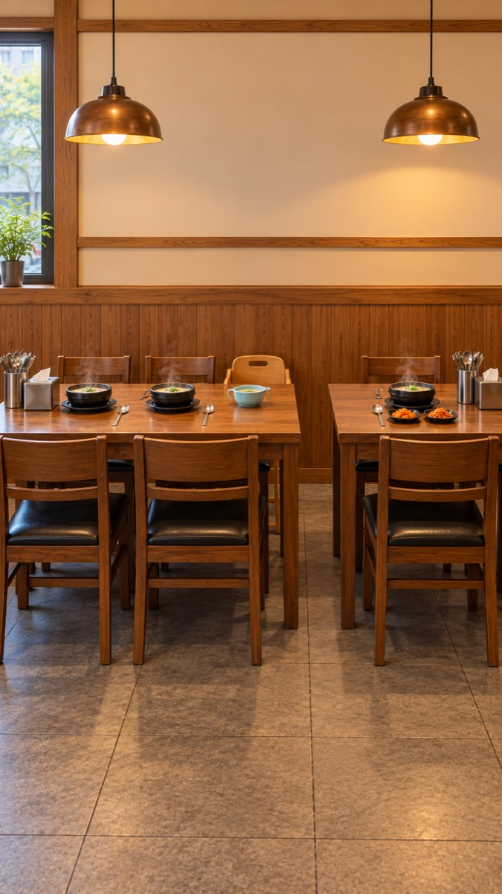
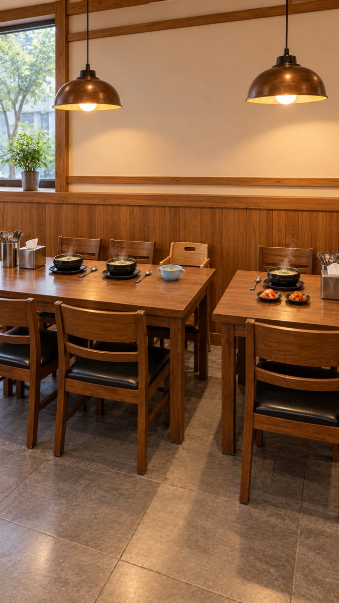
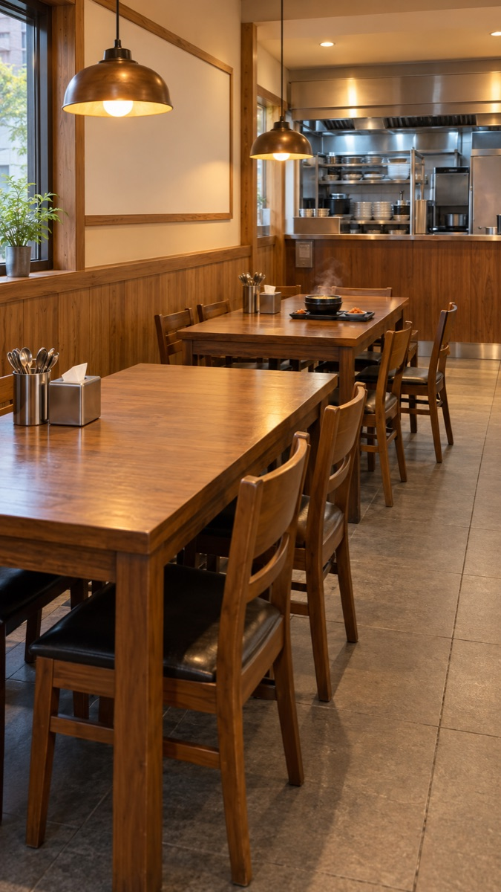
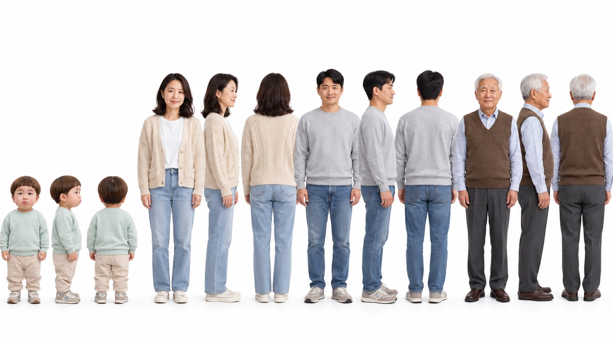

국밥집 «크아~ 시원해!» — 세트 고르기
2026-10-29 · 시안은 Codex로 만들었습니다(0원). 기존 국밥집 사진을 참조로 넣어 같은 가게로 그렸습니다.
왜 새 각도인가
- 기존 세트는 통로를 따라 비스듬히 보는 각도입니다. 도윤이와 할아버지가 마주 보며 말하면 둘 중 한 명은 뒤통수만 보입니다.
- 지난 국밥집 편이 «자리도 왔다갔다»로 폐기된 원인도 같았습니다.
- 새 각도는 고깃집 편처럼 테이블 건너편 정면입니다. 모두 벽 쪽에 앉고, 왼쪽부터 엄마 → 아빠 → 아기 의자의 도윤이 → 옆 작은 테이블의 할아버지 순서입니다.
시안



인물 시트

도윤 연두 맨투맨·베이지 바지 · 엄마 아이보리 니트 가디건·흰 티·청바지 · 아빠 회색 맨투맨·청바지 · 할아버지 갈색 니트 조끼·하늘색 체크 셔츠. 도윤이 키는 아빠의 약 0.54배입니다.
흐름 (6컷 · 24초)
- 도윤 — 작은 국그릇을 두 손으로 들고 마신 뒤 «크아~ 시원해!»
- 할아버지 — «어이구, 아저씨 다 됐네!»
- 도윤 — 그릇을 들어 보이며 «할부지도 크아!»
- 할아버지 — 뚝배기를 마시고 «크아~»
- 아빠 — 국물을 마시다 무심코 «크아~»
- 도윤 — 아빠를 가리키며 «아빠도!» → 엄마 웃음 참음, 아빠 멈칫